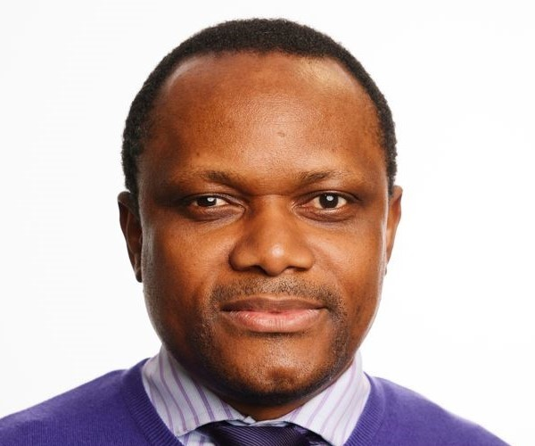

The AgroSolar Technopreneurship Centre (ASTIC) is an interdisciplinary innovation and research hub established to develop, demonstrate and commercialise sustainable, solar-power technologies that address agricultural and post-harvest challenges in Nigeria. ASTIC integrates Science, Technology, Engineering, Agriculture, Entrepreneurship and Innovation (STEAEI) to transform research ideas into practical solutions for farmers, traders, entrepreneurs, industries and communities.
Team
Lecturer/Co-Researcher
Akwa Ibom State Polytechnic
PhD Medical Biochemistry
VIEW PROFILE
Transnational Industry-linked Enterprise Education Consultant
Manchester University
PhD, Electrical Electronics
VIEW PROFILE
Chief Lecturer
Benue State Polytechnic
PhD Environmental Microbiology
VIEW PROFILEThe AgroSolar Technopreneurship and Innovation Centre (ASTIC) brings together academic knowledge, renewable energy, agriculture and innovation to develop practical solutions for reducing post-harvest losses and promoting sustainable agricultural development.
Explore the project information document to learn more about ASTIC, its objectives, activities, partnerships, innovation, training and expected impact.
READ ASTIC PROJECT INFORMATIONAgroSolar helps farmers preserve crops using solar-powered technology.